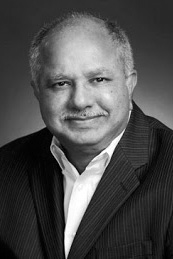

|  |
1994 год Edward A. Feigenbaum (1936) и Rajagopal Reddy (1937) «За проектирование и создание масштабных систем искусственного интеллекта, демонстрирующих практическую важность и потенциальное коммерческое влияние технологий ИИ» |
Страна: США
Образование: Edward A. Feigenbaum - Доктор философии в области электротехники Университет Карнеги-Меллона, 1960
Raj Reddy - Доктор философии в области математики, Стэнфордский университет, 1966
О лауреатах
Feigenbaum известен как отец экспертных систем. Он работал с проблемой индукции, в частности с тем, как научить компьютеры создавать теории из данных – теории, которые не просто объясняют те данные, на которых базируются, а способные предсказывать новые данные. Со своими коллегами он разработал эвристическую программу DENDRAL, которая могла угадывать геометрическую структуру сложных химических веществ по их формуле и спектрограмме массы и открыла несколько неизвестных ранее структур. Последующими проектами Feigenbaum были экспертные системы в областях медицины и молекулярной генетики. Reddy больше всего известен за проектирование первых систем для распознавания непрерывной речи, но он занимался и задачами распознавания изображений и лиц, а также автономными роботами. В 2005 году он основал совместно с NASA и DARPA технологическую компанию Senseta, которая специализируется на системах управления для беспилотных систем, развитии передовых сенсоров, а также проектировании и производстве беспилотных транспортных средств.
Ключевые слова: Expert Systems, DENDRAL project, Artificial Intelligence, Robotics, Human-Computer interaction
Краткая библиография
| 1. |
Machine Intelligence and Robotics: Report of the NASA Study Group — Executive Summary, Final Report Carl Sagan (chair), Raj Reddy (vice chair) and others, NASA JPL, September 1979. |
| 2. |
Feigenbaum, A. E. and Julian Feldman (editors), Computers and Thought, McGraw-Hill, 1963, reprinted by AAAI Press/The MIT Press, 1995. Содержит копии передовых работ и может служить введением для желающих начать работу с искусственным интеллектом. |
| 3. |
Feigenbaum, A. E., A. Barr and P. Cohen (editors), Handbook of Artificial Intelligence (Four Volumes), Wm. Kaufmann Inc., 1981-84. Содержит специально отобранные и хорошо написанные выводы по важным идеям относительно ИИ. |
| 4. |
Feigenbaum, E. A., “The Art of Artificial Intelligence: I. Themes and Case Studies of Knowledge Engineering,” Proceedings of the International Joint Conference on Artificial Intelligence, 1977 and the National Computer Conference 1978 (winner of the conference award for most outstanding technical paper). (Also, Stanford Heuristic Programming Project Memo HPP-77-25, and Computer Science Department Memo STAN-CS-77-621). Книга представила широкой публике разработки экспертных систем. |